✨ Sabores de Natal em Cada Página
Clássicos natalinos e novas ideias para surpreender toda a família e fazer sua ceia brilhar.
Receitas deliciosas, práticas e tradicionais, incluindo drinks e bebidas, para encantar toda a família
neste Natal 🎄✨
De R$ 36,00 → Agora por apenas
Clássicos natalinos e novas ideias para surpreender toda a família e fazer sua ceia brilhar.
Receitas com carnes, aves, sobremesas, versões leves e vegetarianas. Opções para todos os gostos e necessidades.
Cada receita foi criada para unir a família e deixar a ceia inesquecível, com aquele toque especial de Natal.
200 Receitas Especiais para Transformar Seu Natal em uma Celebração Inesquecível!
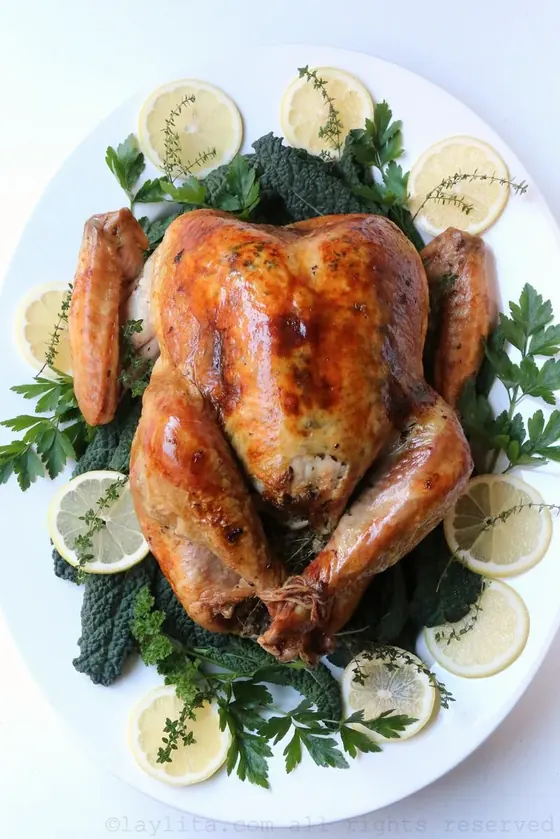
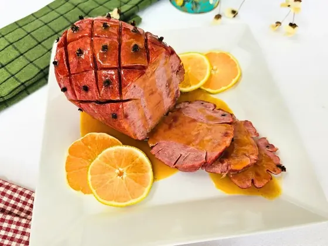
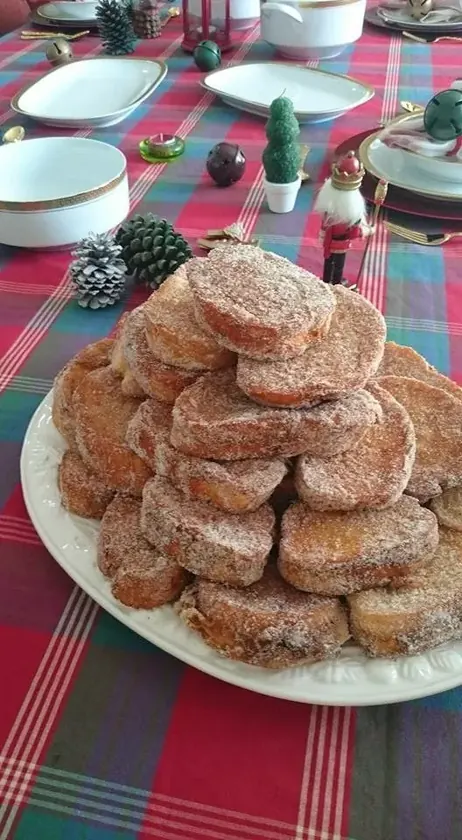
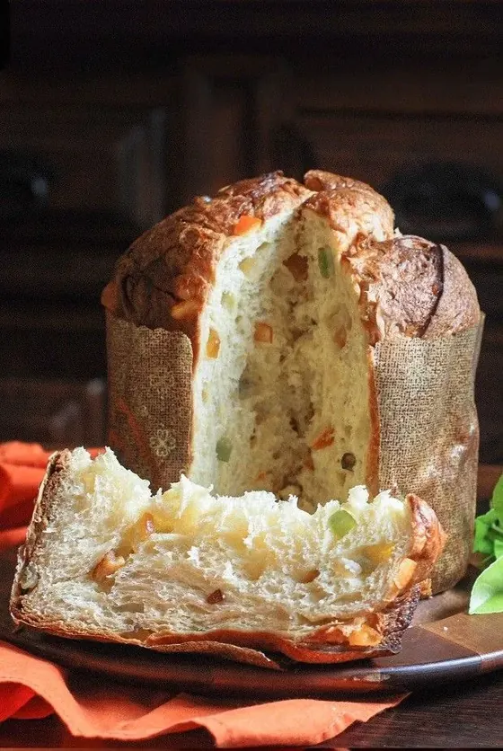
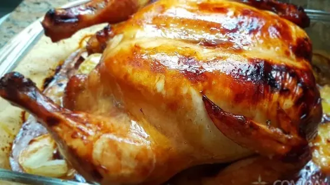
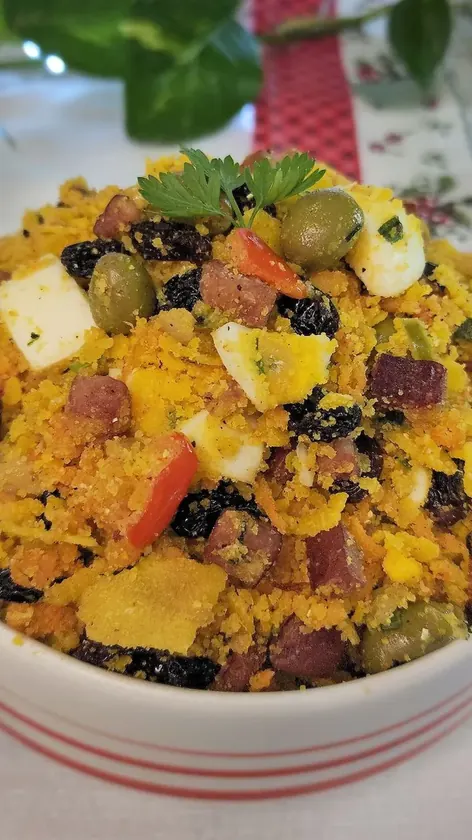
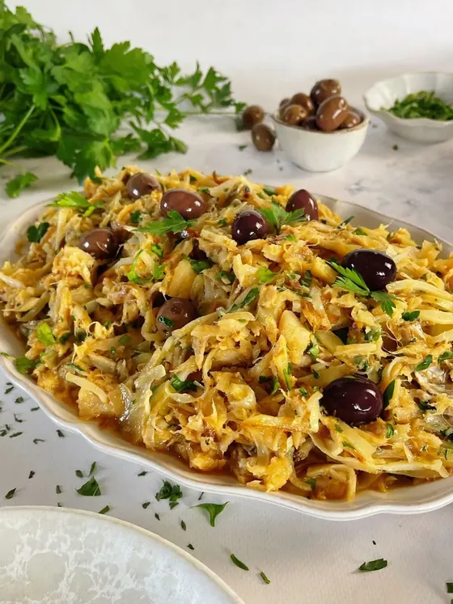
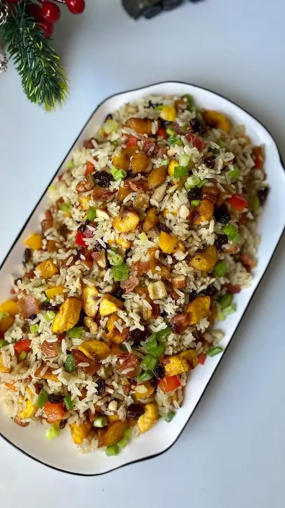
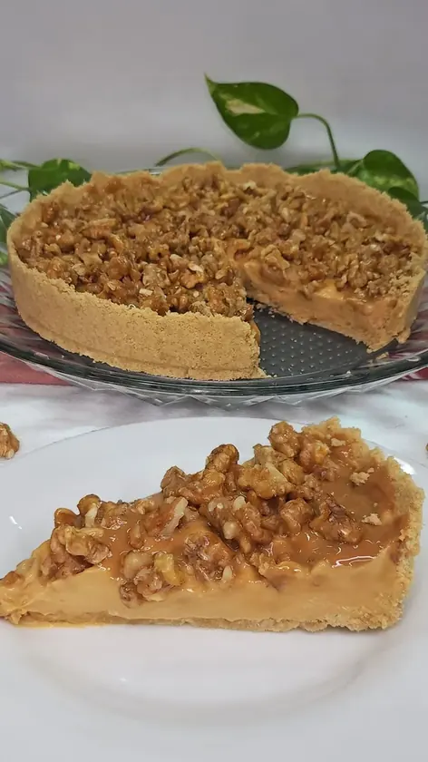
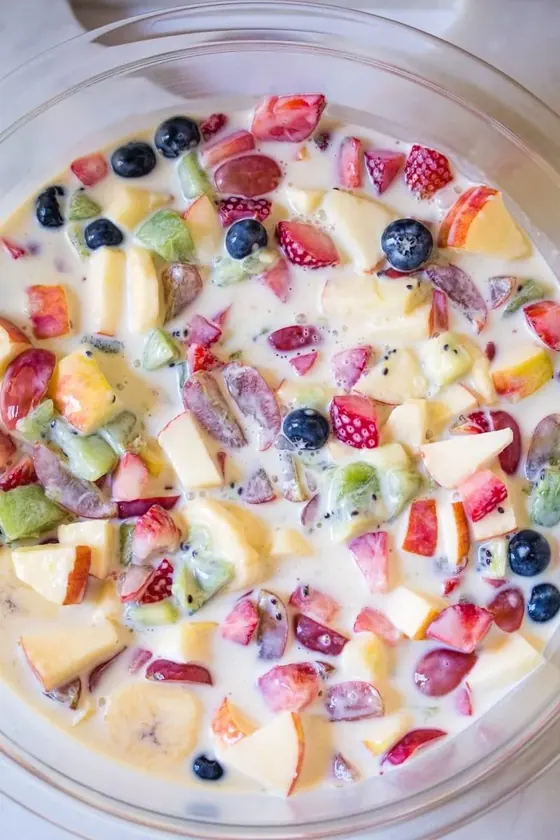
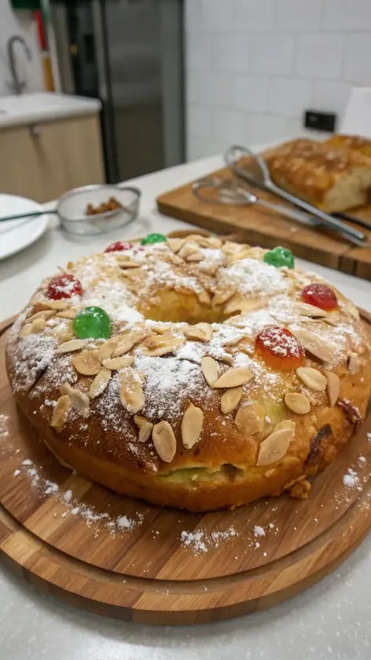
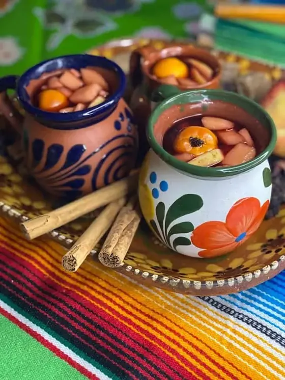
Receitas deliciosas, tradicionais e especiais para o Natal.
Organize sua ceia do início ao fim! Um planejamento prático com listas, horários e etapas para deixar tudo pronto sem estresse e no tempo certo.
Aprenda a criar uma mesa natalina linda e acolhedora — com dicas de cores, arranjos e combinações simples que encantam qualquer convidado.
Monte jantares completos, deliciosos e acessíveis — cardápios testados e calculados para economizar sem abrir mão do sabor.
A opção Premium inclui o livro completo, todos os bônus exclusivos e a versão imprimível.
O Que Dizem Nossos Clientes Sobre
200 Receitas de Natal:
As 200 Receitas de Natal são INCRÍVEIS! Usei várias na minha ceia e todo mundo adorou. Minha família está impressionada com tanta variedade! 🎄